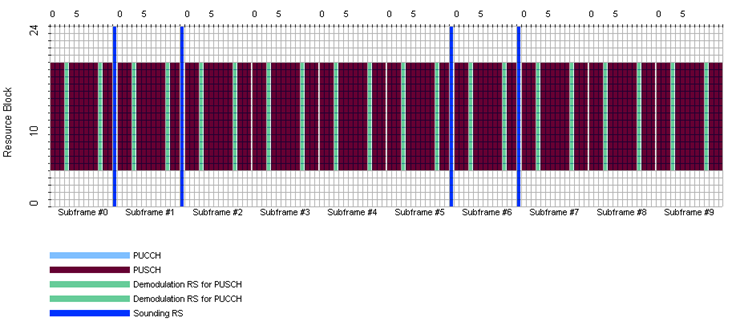

LTE Quick Reference Go Back To Index Home : www.sharetechnote.com
DMRS stands for 'DeModulation Reference Signal'. As the name stands for, this is a reference signal for PUSCH implying that eNodeB would not be able to decode PUSCH if this PUSCH DMRS is bad.
For how (at which steps of PUSCH decoding process) this signal is used, refer to 'Decoding Uplink Signal'.
PUSCH DMRS always takes up the center symbol of a slot (meaning symbol 3 and symbol 10 of a UL subframe). Following is an example of UL transmission showing PUSCH data, PUSCH DMRS and UL SRS.

Understanding the location of PUSCH DMRS is simple, but generating the DMRS is not that simple. Big picture is simple since PUSCH DMRS is also a kind of Zadoff - Chu Sequence. But there are so many parameters being used to create a specific Zadoff-Chu sequence for a specific case. Following is the chain of algorithms from 36.211 section 5.5 Reference signals. It would be hard to grasp the meaning of each parameters unless you implement this algorithm on your own, but just taking a brief look-at of these equations would give you the idea on what kind of factors are involved in this sequence generation.
If you go through the 36.211 5.5.2 Demodulation reference signal, you will notice that some of the parameters should come from the higher layer signaling message. Following illustration show you how the higher layer parameter is getting involved in the reference signal sequence generation.